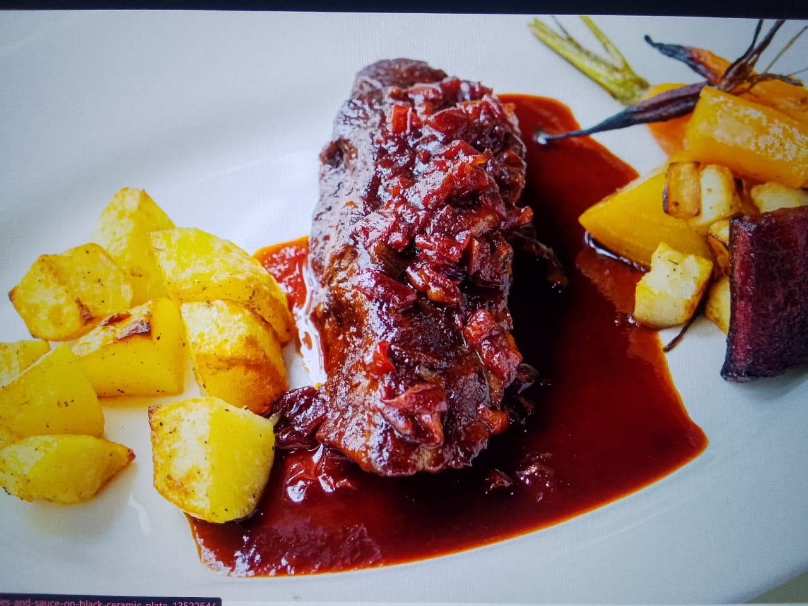

Boiled Potatoes with Beef Stew and Sauce
Ingredients:
- Boiled potatoes
- Beef (cut into pieces)
- Onions
- Tomatoes
- Cooking oil
- Garlic, ginger, and other spices
- Salt and pepper
- Water for stew
Instructions:
- Boil the potatoes until soft.
- In a separate pan, cook the beef pieces until browned.
- Add chopped onions, tomatoes, garlic, and spices to the beef. Let it cook for a few minutes.
- Add water and let it simmer until the beef is tender and the sauce thickens.
- Serve the beef stew with boiled potatoes and enjoy!